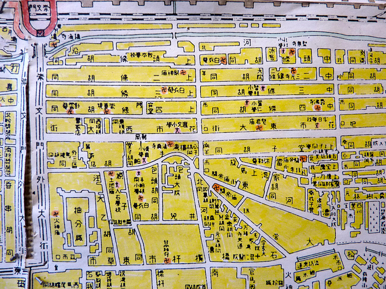
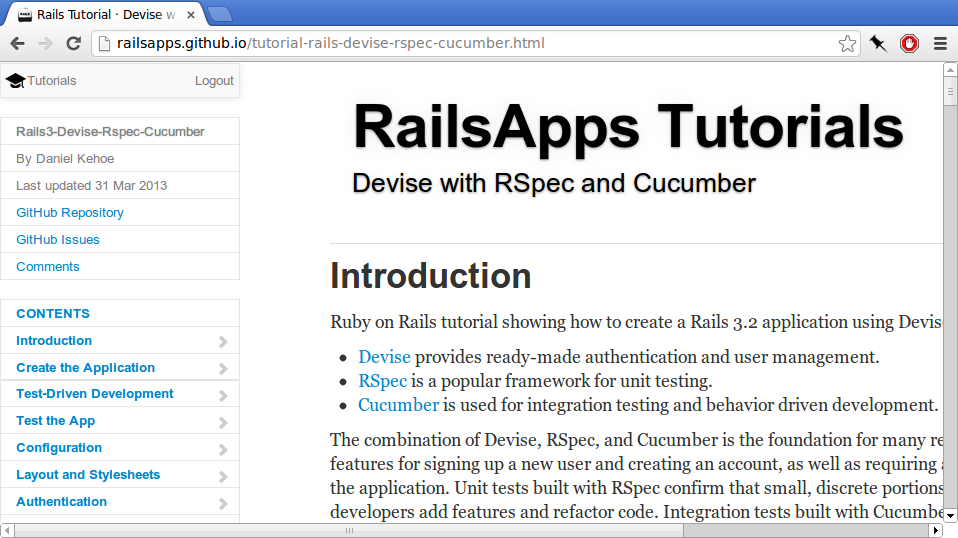
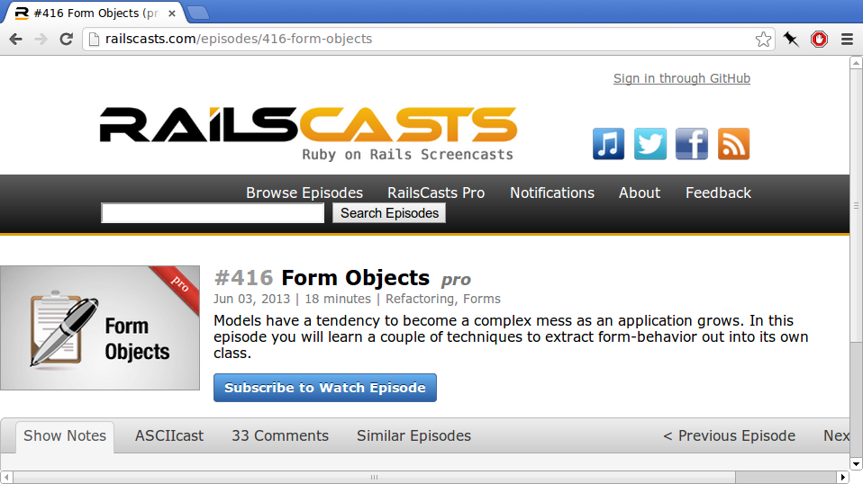
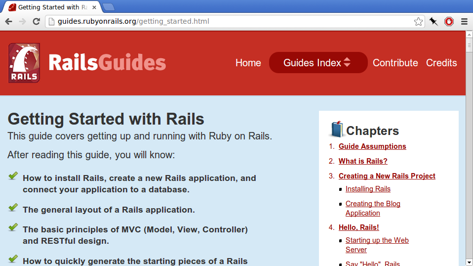
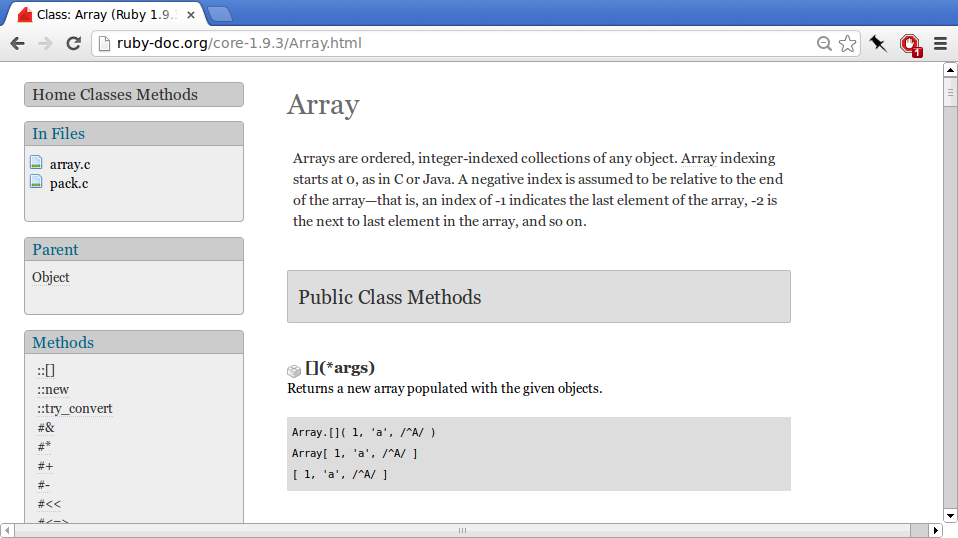

Learning to Learn
by Arne Brasseur / plexus
Anecdote
“I learned MongoDB”
Learning to learn
There will not always be a coach
There will always be more stuff to learn
Becoming confident in learning will be your most important skill
Words, so many words
Words, so many words

Play, Feel, Experience
Anecdote
“Git got us in a mess”
Play, Feel, Experience

Types of documentation
Tutorials
Great starting point
Make sure to challenge yourself

Code School
Rails for Zombies
Screencasts
Very engaging
Look over the shoulder of experts

Manuals
For when you really want to dig in to a subject
All the pros and cons of “technical documentation”

API documentation
Generated from the source code
Explains every class/method
Reference for day-to-day programming

Source code
Use the source!
Writing well means reading a lot
There is material out there for all levels
Conclusion
Don’t get discouraged!
Find what works for you
Have fun!